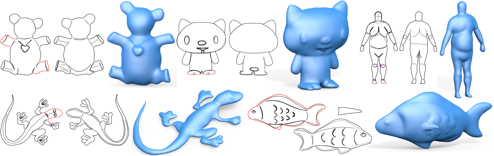
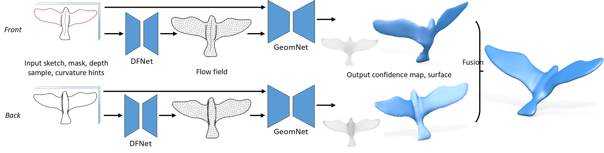
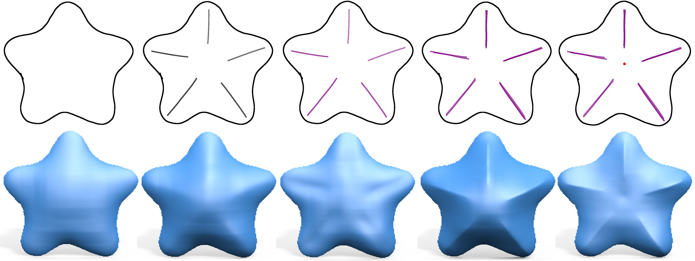
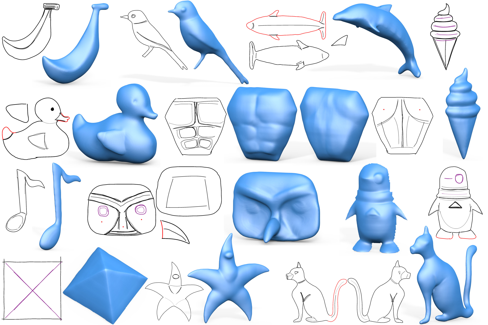

| Robust Flow-Guided Neural Prediction for Sketch-Based Freeform Surface Modeling |
|||
| Changjian Li1,2, Hao Pan2, Yang Liu2, Xin Tong2, Alla Sheffer3, Wenping Wang1 | |||
| 1The University of Hong Kong, 2Microsoft Research Asia, 3University of British Columbia | |||
| ACM Transactions on Graphics (Proceedings of SIGGRAPH Asia 2018) | |||
|  | |||
| Five freeform shapes created by our sketch-based modeling approach, with the corresponding planar sketches. The shapes are sketched in two views for the bear, kitty, human body and gecko models, and in three views for different parts of the fish model. The sketches are gray scale images; strokes marked in red have been re-sketched in rotated views to bend the bear limbs or fish body. | |||
| Abstract | |||
|
Sketching provides an intuitive user interface for communicating free form shapes.
While human observers can easily envision the shapes they intend to communicate, replicating this process algorithmically requires resolving numerous ambiguities.
Existing sketch-based modeling methods resolve these ambiguities by either relying on expensive
user annotations or by restricting the modeled shapes to specific narrow categories.
We present an approach for modeling generic freeform 3D surfaces from sparse, expressive 2D sketches that overcomes both limitations by incorporating convolution neural networks (CNN) into the sketch processing workflow.
Given a 2D sketch of a 3D surface, we use CNNs to infer the depth and normal maps representing the surface. To combat ambiguity we introduce an intermediate CNN layer that models the dense curvature direction, or flow, field of the surface, and produce an additional output confidence map along with depth and normal. The flow field guides our subsequent surface reconstruction for improved regularity; the confidence map trained unsupervised measures ambiguity and provides a robust estimator for data fitting. To reduce ambiguities in input sketches users can refine their input by providing optional depth values at sparse points and curvature hints for strokes. Our CNN is trained on a large dataset generated by rendering sketches of various 3D shapes using non-photo-realistic line rendering (NPR) method that mimics human sketching of free-form shapes. We use the CNN model to process both single- and multi-view sketches. Using our multi-view framework users progressively complete the shape by sketching in different views, generating complete closed shapes. For each new view, the modeling is assisted by partial sketches and depth cues provided by surfaces generated in earlier views. The partial surfaces are fused into a complete shape using predicted confidence levels as weights. We validate our approach, compare it with previous methods and alternative structures, and evaluate its performance with various modeling tasks. The results demonstrate our method is a new approach for efficiently modeling freeform shapes with succinct but expressive 2D sketches. |
|||
|
|||
| Algorithm pipeline | |||
|  | |||
| Sketching in front and back views to model a complete bird model. In each view, the input contains gray scale sketches drawn by the user and additional data including sketch mask and optional sparse depth sample points or curvature hints. The first part (DFNet) of the two-stage CNN for surface prediction takes the input data and regresses a dense flow field that characterizes the curvature directions of the final surface. Then the input data is combined with the dense flow field to go through the second stage (GeomNet) to produce the surface patch represented as depth and normal maps, together with a confidence map that measures how much ambiguity there is for each predicted pixel. Back view sketching borrows contour depth from the front view, and goes through the same two-stage CNN to produce the back patch. The two surface patches are finally combined and fused into the complete 3D shape. | |||
| Results | |||
|  | |||
| Sketching different stars in a sequence. From left to right: contour only, inner strokes are drawn, inner strokes are given negative curvature hints, inner strokes are given sharp feature hints, and finally a depth sample (red point) is put at the center to push down the shape. | |||
|  | |||
| More sketches and corresponding shapes. Red contours are re-sketched to provide additional boundary depth data. Inner depth samples (red points) are used for the torso back and owl face. Sharp features (purple) are used in pyramid, penguin, owl face. Curvature hints are used for ice cream. Dolphin fin, duck wing, and owl nose are modeled by small triangle patches in their own views and then fused with the other parts. Penguin and pyramid are single patches; the rest are complete shapes. | |||
| Video |
|||
| ©Hao Pan. Last update: Sep 18, 2018. |